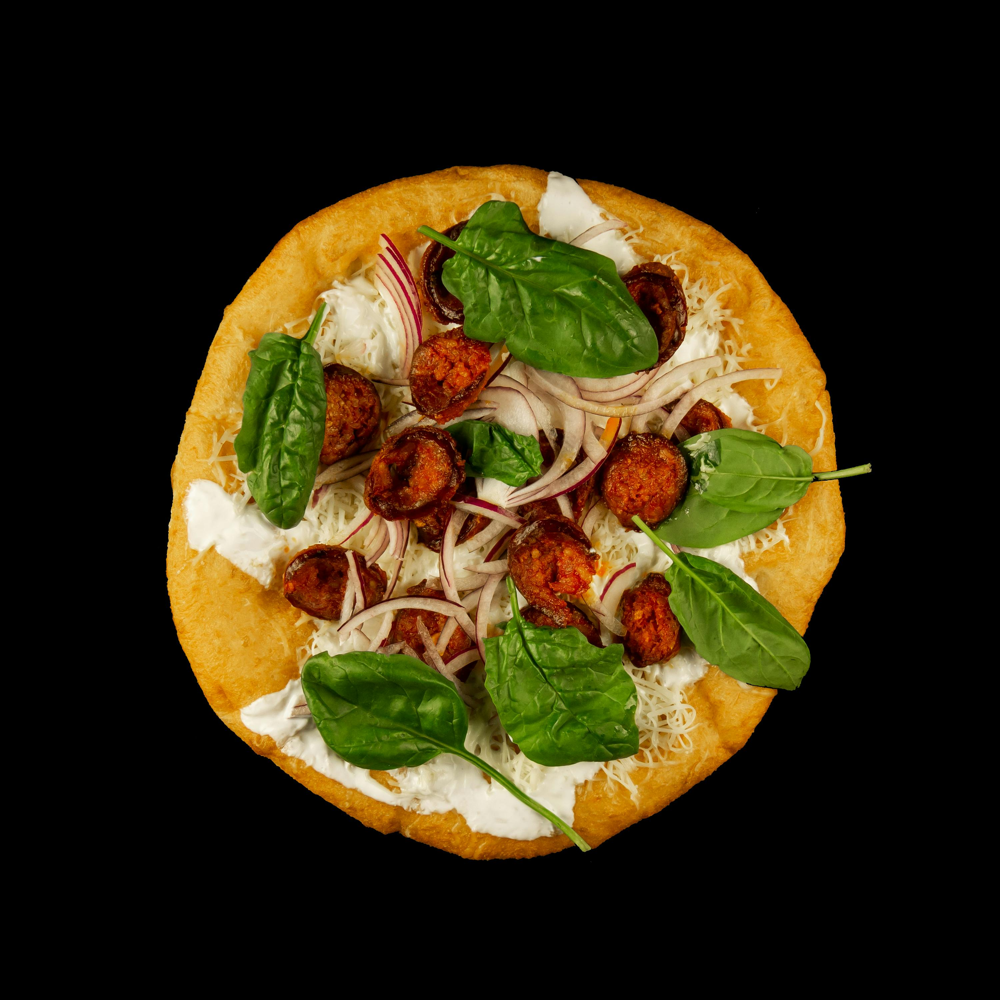

Greek Pizza with Spinach, Feta and Olives

Description
A deliciously unique twist on a classic, spinach pizza features a crispy
crust topped with a savory blend of melted cheeses, fresh spinach, and a
hint of garlic. Perfectly seasoned, this pizza combines the wholesome
goodness of spinach with the rich flavors of traditional pizza, making it
a satisfying choice for vegetarians and pizza lovers alike.
Ingredients
1/2 cup mayonnaise
4 cloves garlic, minced
1 cup crumbled feta cheese, divided
12 inch pre-baked Italian pizza crust
1/2 cup oil-packed sun-dried tomatoes, coarsely chopped
1 tablespoon oil from the sun-dried tomatoes
1/4 cup pitted kalamata olives, coarsely chopped
1 teaspoon dried oregano
2 cups baby spinach leaves
1/2 small red onion, halved and thinly sliced
Steps
-
Adjust oven rack to lowest position, and heat oven to 450 degrees.
-
Mix mayonnaise, garlic and 1/2 cup feta in a small bowl.
-
Place pizza crust on a cookie sheet; spread mayonnaise mixture over pizza,
then top with tomatoes, olives and oregano.
-
Bake until heated through and crips, about 10 minutes.
-
Toss spinach and onion with the 1 tablespoon sun-dried tomato oil.
-
Place the spinach mixture and the remaining 1/2 cup feta cheese on top.
-
Return to oven and bake until cheese melts, bout 2 minutes.
-
Cut into 6 slices and serve.